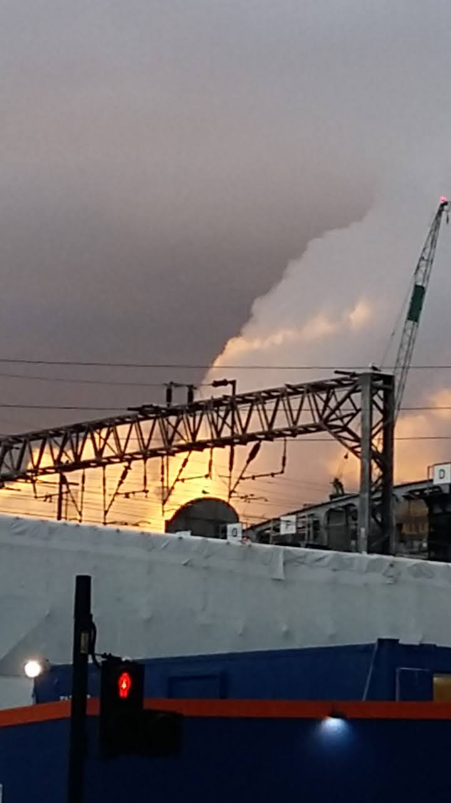
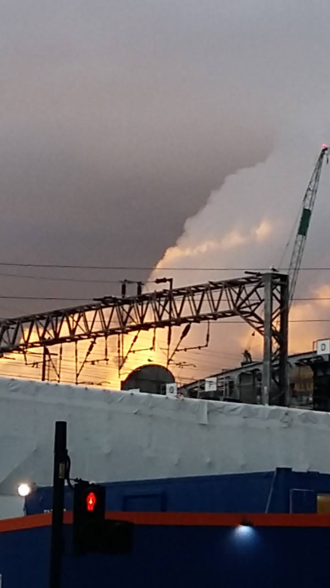

Smoke running Clydeside. Poles and bridges come up lavender.


Thinking diaries, and about walking in circles, and about being interrupted by strange lights.
 

Last words. Surely, they must weigh something in grams. Like dust: a stange cover.
Imagine a micrometer for smoke, or a tiny scale for dust which could weigh up an evening like this one.
It might look like this:a machine in low light.


At night: some plastic roses above a door. I should construct them some pollen, dust them with something.
Prosthetic, I guess.

Some beautiful geese, looking very small from down here.
Thinking about the speed amongst that V, made relative by distance.
And: thinking about the sky as archive.

Vampire teeth as some kind of instrument for telling you when twilight has come.
Something to do with the levels of twilight, a kind of wooden and chrome detector...these teeth in your mouth catching light.
Swans folding in on themselves.
They're good enough as they are. I don't want to make anything.